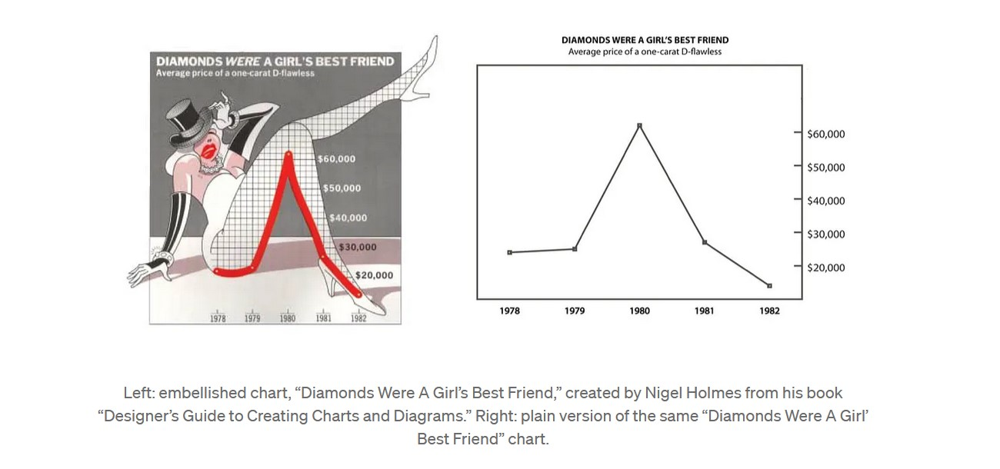

knitr::opts_chunk$set(warning = FALSE)Comparing Edward Tufte and Nigel Holmes: Contrasting Approaches to Data Graphics
Edward Tufte and Nigel Holmes are two prominent figures in the field of data visualization, each representing distinct philosophies on how information should be graphically presented. While Tufte champions a minimalist approach that emphasizes clarity and precision, Holmes advocates for a more illustrative style that engages readers through visual storytelling. Their differing perspectives offer valuable insights into the balance between form and function in data graphics.
Edward Tufte: The Purist of Precision
Edward Tufte, often referred to as the “Leonardo da Vinci of data,” is renowned for his advocacy of high-integrity graphics that prioritize the accurate conveyance of information. His seminal works, such as The Visual Display of Quantitative Information, argue for the elimination of unnecessary elements—what he terms “chartjunk”—that may distract from the data itself. Tufte emphasizes the importance of the “data-ink ratio,” promoting designs where every inked element serves a purpose in representing data. He believes that simplicity and clarity lead to better comprehension, enabling viewers to grasp complex information quickly and accurately. Furthermore, Tufte has made several observations that challenge what others in the field often recommend. Most notably, he advocates for visualizations that are rich in content, suggesting that instead of simplifying the data, designers should present it in its full complexity. This approach entrusts the audience to understand and interpret the information on their own, promoting a deeper engagement with the material.
Nigel Holmes: The Storyteller through Imagery
In contrast, Nigel Holmes brings an illustrative and often playful approach to data visualization. With a background in graphic design and a tenure as the graphics director for Time magazine, Holmes integrates artistic elements to make data more accessible and engaging to a broader audience. His work often includes pictorial representations, humor, and metaphors, aiming to tell a story that resonates emotionally with viewers. Holmes contends that adding illustrative features can capture attention and aid memory retention, especially in journalistic contexts where the goal is to inform and entertain.

Philosophical Divergence and Critiques
The core of the divergence between Tufte and Holmes lies in their views on the role of aesthetics in data graphics. Tufte criticizes the use of decorative elements that do not contribute to understanding, arguing that they can mislead or obscure the true message of the data. He maintains that the integrity of information should never be compromised for visual appeal.
Holmes, however, believes that embellishments can enhance communication when used thoughtfully. He asserts that engaging visuals can draw in readers who might otherwise overlook quantitative information. By making graphics more approachable, Holmes aims to bridge the gap between data and audience, especially in media where capturing attention is crucial.
Complementary Contributions to Data Visualization
Despite their differences, both Tufte and Holmes have significantly influenced the field of data visualization. Tufte’s principles have set high standards for clarity and honesty in graphical representations, impacting how academics, scientists, and statisticians present data. His insistence on precision has led to more ethical practices in data depiction, minimizing the risk of misinterpretation.
Holmes’s approach has expanded the possibilities of how data can be communicated, especially in educational and journalistic settings. His techniques demonstrate that data visualization can be both informative and aesthetically pleasing, potentially reaching audiences who are less inclined toward traditional statistical presentations.
The Research
The ongoing debate in data visualization circles often centers around the use of visual embellishments in charts. While proponents of minimalist design argue for simplicity and a high data-ink ratio, others suggest that embellishments can enhance engagement and recall. The study titled “Useful Junk? The Effects of Visual Embellishment on Comprehension and Memorability of Charts” by Scott Bateman et al. (2010) delves into this discourse by empirically examining how visual embellishments affect a viewer’s comprehension and memory of chart information.
To investigate this, Bateman and colleagues designed an experiment comparing embellished charts with their plain counterparts. The embellished charts were sourced from Nigel Holmes’s book Designer’s Guide to Creating Charts and Diagrams, known for integrating illustrative elements into data visualization. Fourteen charts were selected, each existing in both an embellished form and a simplified version stripped of extra imagery. Both versions maintained consistent chart types and included essential components like titles and axis labels.
Twenty university students participated in the study, all possessing some experience with chart creation and interpretation. The experiment comprised two parts:
Reading and Description: Participants viewed a slideshow of the charts—either the embellished or plain version of each—and answered four questions per chart concerning its subject, categories and values, basic trends, and any perceived messages from the author.
Recall: To assess both short-term and long-term memory effects, half of the participants completed this section five minutes after the first part, while the other half did so two to three weeks later. They were asked to recall and describe as many charts as possible, with prompts provided if necessary.
The Results
Comprehension: The study found no significant differences between the embellished and plain charts in terms of participants’ ability to comprehend and describe the charts’ subjects, categories, or trends. Completion times for describing the charts were also similar across both versions.
Immediate Recall: In the short-term recall, participants showed comparable performance for both chart types, though embellished charts yielded slightly better recall of the charts’ messages.
Long-Term Recall: Notably, in the long-term recall, participants who viewed embellished charts demonstrated significantly better memory across all measures—subjects, categories, trends, and messages. They also required fewer prompts to recall the charts.
User Preferences: Participants expressed a preference for the embellished charts, describing them as more enjoyable, attractive, easier to remember, and faster to both describe and recall.
Conclusion
Edward Tufte and Nigel Holmes represent two ends of the spectrum in data visualization philosophy—one prioritizing minimalist precision and the other embracing illustrative engagement. Their contrasting approaches highlight an ongoing dialogue about the best ways to communicate information effectively. While Tufte’s methods ensure clarity and prevent distortion, Holmes’s style underscores the importance of audience engagement and storytelling. Together, they enrich the field by offering diverse strategies that can be adapted to different contexts and purposes, ultimately enhancing how we understand and interact with data.
References
Bateman, S., Mandryk, R. L., Gutwin, C., Genest, A., McDine, D., & Brooks, C. (2010). Useful Junk? The Effects of Visual Embellishment on Comprehension and Memorability of Charts. In Proceedings of the SIGCHI Conference on Human Factors in Computing Systems (pp. 2573–2582). ACM. DOI: 10.1145/1753326.1753716